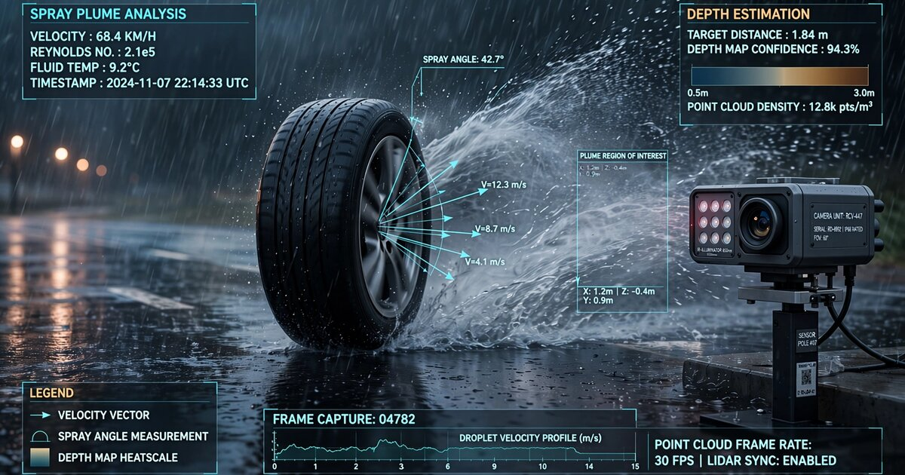

System and Method for Non-Contact Estimation of In-Service Tire Tread Depth Using Roadside High-Speed Imaging of Wet-Road Spray Plume Geometry with Convolutional Neural Network Regression

Abstract
Disclosed is a system and method for estimating the remaining tread depth of vehicle tires without physical contact, vehicle stoppage, or driver cooperation, by analyzing the geometry and intensity distribution of water spray plumes generated by tires traversing wet road surfaces. A roadside imaging station comprising a high-speed camera (1,000+ frames per second), structured near-infrared illumination, and a rain-rate sensor captures tire-specific spray plumes as vehicles pass at normal traffic speeds. The system segments individual tire spray regions from each frame sequence, extracts a feature vector characterizing plume height, lateral spread angle, ejection velocity, droplet size distribution proxy (via intensity variance), and temporal coherence of tread-groove channeling artifacts. A convolutional neural network (CNN) regression model, trained on paired high-speed imagery and ground-truth tread depth measurements from fleet vehicles with known maintenance records, maps extracted spray features to an estimated tread depth per tire in thirty-seconds of an inch. The system accounts for confounding variables including vehicle speed, water film thickness, tire width, ambient wind, and road surface macro-texture via auxiliary sensor inputs and learned invariance. Outputs include per-tire tread depth estimates, binary pass/fail classification against the 49 U.S.C. § 30123 minimum (2/32″), and fleet-level tread wear rate trending when repeated observations of the same vehicle (identified by license plate or RFID) are accumulated over time.
Field of the Invention
This invention relates to vehicle safety inspection, specifically to non-contact methods for assessing tire tread depth using computer vision analysis of hydrodynamic spray patterns generated during wet-road driving.
Background
Tire tread depth is one of the most safety-critical parameters of any vehicle. The National Highway Traffic Safety Administration (NHTSA) estimates that tire-related factors contribute to approximately 33,000 crashes and 19,000 injuries annually in the United States. Worn tires dramatically increase stopping distances on wet surfaces: a tire at 2/32″ tread depth requires up to 87% more distance to stop from 70 mph on a wet road compared to a new tire at 10/32″. Hydroplaning onset speed drops from approximately 55 mph at 8/32″ to below 35 mph at 2/32″, following the relationship derived from Horne and Dreher (NASA TN D-2056, 1963):
Vp = 10.35 × √(P / A) × (td)0.04
where Vp is hydroplaning speed in knots, P is inflation pressure in psi, A is footprint area in square inches, and td is tread depth. While the tread depth exponent is small for hydroplaning onset speed, the effect on water evacuation rate is dramatic: a tire with 8/32″ grooves evacuates approximately 2.5 gallons per second at 60 mph per tire (Goodyear Engineering), while a tire at 2/32″ evacuates less than 0.6 gallons per second.
Despite the clear safety criticality, current tire tread monitoring methods are either impractical for scale or occur too infrequently:
- Manual inspection: The penny test or tread depth gauge inserted into grooves. Requires vehicle stoppage, physical access, and a motivated operator. Studies by FMCSA find that only 19% of passenger vehicle owners check tread depth annually.
- Annual safety inspection: Only 15 U.S. states require periodic vehicle inspections, and many have eliminated tire-specific criteria. Texas reinstated tread checks in 2024 after a 25-year gap.
- Tire Pressure Monitoring Systems (TPMS): Mandated since 2007 under FMVSS 138, TPMS monitors inflation pressure but provides zero information about tread wear.
- Tread wear indicators (TWI): Molded rubber bars at 2/32″ depth in the tread grooves. Only indicate the absolute minimum legal limit, not continuous depth. Require visual inspection to read.
- Drive-over scanners: Systems from Sigmavision (TreadReader) and TyreSafe use structured-light 3D scanning to measure tread depth as vehicles drive slowly over a pit or ramp. Capital cost: $50,000-$120,000 per installation. Requires vehicle speeds below 10 mph and precise alignment over the scanner.
- Embedded tire sensors: Pirelli Cyber Tire and Continental ContiSense embed sensors in the tire itself. Requires purpose-built tires at premium cost ($50-100 per tire surcharge) and does not retrofit to existing tire inventory.
The gap in the art is a non-contact, high-throughput system that can estimate tire tread depth on vehicles traveling at normal highway speeds, requiring no vehicle cooperation, no specialized tires, and no drive-over pit. The physical phenomenon enabling this system is well-documented but unexploited: tread groove geometry directly controls the hydrodynamic spray pattern behind a tire on a wet surface, and that spray pattern is visible to cameras at high frame rates.
Detailed Description
1. Physical Basis: Tread Groove Hydrodynamics and Spray Formation
When a tire rolls on a wet road surface, water in the tire's path must be displaced before the tread rubber contacts the pavement. This displacement occurs through three zones, as described by Moore (1975, "The Friction of Pneumatic Tyres") and refined by Gnadler et al. (Tribology International, 2007):
- Zone 1 (Sinkage zone): Bulk water inertia prevents complete displacement. Water enters the tread grooves and is channeled laterally and rearward.
- Zone 2 (Transition zone): Thin film remains. Viscous shear begins evacuating residual water through grooves.
- Zone 3 (Contact zone): Dry contact between rubber and aggregate. Friction coefficient approaches dry value.
The water evacuated from Zones 1 and 2 exits the tire contact patch primarily through the circumferential and lateral tread grooves. The exit velocity, direction, and volume of this ejected water are functions of groove depth, groove width, groove geometry (circumferential vs. lateral vs. siped), vehicle speed, and water film thickness. A new tire with 10/32″ grooves produces high-velocity, well-collimated spray jets that exit laterally at 15-30 degrees from the tire plane, with visible groove-channel structure in the spray. A worn tire with 2/32″ grooves cannot channel water effectively; the spray becomes a diffuse, low-velocity mist dominated by contact patch squeeze-out rather than groove channeling.
This systematic relationship between groove depth and spray morphology is the physical foundation of the disclosed system.
2. Roadside Imaging Station Hardware
Each imaging station is installed at the roadside, oriented perpendicular to traffic flow, and comprises:
- High-speed camera: A global-shutter CMOS camera operating at 1,000-2,000 fps, resolution 1280×1024 or higher. Candidate sensors include the Sony IMX530 (1″ format, 24.5 MP at 60 fps, 1280×800 at 2,200 fps in ROI mode) or ON Semiconductor AR0820AT (8.3 MP automotive-grade, 2,000 fps in ROI crop). Exposure time: 50-200 μs per frame to freeze spray droplets.
- NIR illumination array: A pulsed 850nm near-infrared LED array (e.g., Osram SFH 4715A, 1W per emitter, 16-emitter array) synchronized to camera frames via hardware trigger. NIR is invisible to drivers, penetrates light rain, and produces strong backscatter from water droplets per Mie scattering theory (size parameter x = πd/λ in the 10-100 range for 100μm - 1mm spray droplets at 850nm). Retroreflective backboard optional for forward-scatter geometry.
- Vehicle detection and speed sensor: An inductive loop or piezoelectric strip embedded in the road surface triggers camera acquisition and measures vehicle speed (±1 mph). Speed is a critical confounding variable and must be measured, not estimated.
- Rain rate sensor: An optical disdrometer (e.g., OTT Parsivel2) or tipping-bucket rain gauge measuring instantaneous precipitation rate (mm/hr). The system only operates when precipitation rate is between 2 mm/hr (minimum for consistent water film formation) and 25 mm/hr (above which standing water dominates over tread-channeled spray).
- Road surface temperature sensor: IR thermometer measuring pavement surface temperature. Water viscosity varies 2x between 5°C and 35°C, affecting spray dynamics.
- License plate reader (optional): Standard ANPR camera for vehicle identification, enabling longitudinal tread wear tracking across repeated observations.
The station is housed in a weather-sealed NEMA 4X enclosure. Power consumption: approximately 150W during capture (mostly NIR illumination), 15W standby. The system activates only during rain events detected by the disdrometer.
3. Image Acquisition and Tire-Level Segmentation
When the vehicle detection sensor triggers, the camera captures a burst of 200-500 frames (100-250 ms at 2,000 fps) as the vehicle passes. The processing pipeline operates as follows:
- Vehicle speed determination: From the inductive loop or dual-frame license plate tracking. Required for speed-normalization of spray features.
- Tire localization: A pretrained YOLO v8 object detector identifies individual tire regions in each frame. The detector is trained on a tire dataset augmented with synthetic rain/spray overlays. Each tire generates a separate analysis track.
- Spray region extraction: For each localized tire, the spray plume is segmented using a combination of: (a) background subtraction against a rain-only baseline (frames captured between vehicles), (b) intensity thresholding in the NIR channel (spray droplets backscatter 3-10x more than background rain at equivalent distances due to higher droplet density), and (c) a U-Net semantic segmentation model trained on manually annotated spray regions. The segmentation mask isolates the spray plume from background precipitation, road splash, and bodywork reflections.
- Temporal registration: Across the burst sequence, the tire and its spray plume advance through the field of view. Frames are registered to a tire-centered coordinate system using the detected tire bounding box center as origin, compensating for vehicle motion.
4. Spray Feature Extraction
From the segmented, tire-centered spray plume sequence, the system computes the following feature vector for each tire:
- Plume height profile H(θ): Maximum vertical extent of the spray above the road surface as a function of angular position θ relative to the tire contact patch trailing edge. Deep-tread tires produce peak plume heights 40-80% greater than bald tires at equivalent speeds due to higher groove ejection velocities. Measured in pixels, converted to physical units via known camera geometry.
- Lateral spread angle α: The half-angle of the spray plume measured from the tire center plane. Deep circumferential grooves produce narrow, well-directed lateral spray (α = 15-25°). Worn tires produce wider, more diffuse spray (α = 35-60°) as water is squeezed out radially rather than channeled.
- Groove channeling index (GCI): A novel metric quantifying the spatial periodicity of intensity peaks in the spray pattern corresponding to individual tread groove exits. Computed as the spectral energy at the expected groove spacing frequency in a lateral intensity profile taken 50-100mm behind the contact patch. New tires with deep grooves exhibit strong GCI (individual groove jets are visible). Worn tires exhibit GCI near zero (spray is uniform mist).
- Ejection velocity proxy: Estimated from inter-frame displacement of spray leading edge features across consecutive high-speed frames. Deep grooves produce ejection velocities of 15-30 m/s at 100 km/h vehicle speed. Worn grooves: 5-10 m/s.
- Intensity variance σ2I: Pixel intensity variance within the spray region, serving as a proxy for droplet size distribution. Channeled spray from deep grooves produces larger, more coherent droplets (higher variance). Squeeze-out mist from worn tires produces fine, uniform droplets (lower variance).
- Temporal coherence τ: Autocorrelation time of intensity at fixed spatial positions in the spray region across the frame burst. Groove-channeled spray produces quasi-periodic intensity modulation at the tread pattern repetition frequency (related to tire circumference and rotational speed). Worn tires produce temporally random spray.
- Contact patch squeeze-out ratio (CPSR): Ratio of spray intensity originating from the contact patch trailing edge (squeeze-out) to spray originating laterally from groove exits. CPSR increases monotonically as tread depth decreases, because more water remains under the contact patch rather than being channeled through grooves.
All spatial features are normalized by vehicle speed using a power-law relationship (spray height scales approximately as V0.7, lateral spread as V0.3) derived from Weir et al. (Proc. IMechE Part D, 2010) who characterized vehicle spray at speeds from 40-120 km/h. Water film thickness, measured or estimated from rain rate and road macro-texture via the Anderson et al. (TRR 1616, 1998) empirical model, provides an additional normalization input.
5. CNN Regression Model
The extracted feature vector, augmented with raw cropped spray imagery (128×256 pixels per tire, 16 consecutive frames stacked as a 48-channel tensor), is processed by a CNN regression model to estimate tread depth. The architecture comprises:
- Spatial encoder: ResNet-18 backbone (pretrained on ImageNet, fine-tuned) processing each 128×256×3 frame independently, producing a 512-dimensional feature vector per frame.
- Temporal aggregator: A 1D temporal convolutional network (TCN) with 3 dilated causal convolution layers (dilation factors 1, 2, 4) aggregating the 16-frame feature sequence into a single 256-dimensional temporal embedding. The TCN captures the temporal structure of groove-channeled spray that is diagnostic of tread depth.
- Auxiliary input fusion: Vehicle speed, rain rate, road surface temperature, and the 7 engineered features (H, α, GCI, velocity proxy, σ2I, τ, CPSR) are concatenated as a 10-dimensional vector, passed through a 2-layer MLP (64, 32 units), and concatenated with the temporal embedding.
- Regression head: Two fully connected layers (128, 1) with ReLU activation and dropout (0.3) producing a scalar tread depth estimate in thirty-seconds of an inch (0-12 range, corresponding to 0/32″ to 12/32″).
Training data collection proceeds by instrumenting commercial fleet vehicles (rental car agencies, ride-share fleets, municipal vehicle pools) with known tread depth measurements taken during scheduled maintenance. Each fleet vehicle passes the imaging station multiple times between maintenance intervals, generating paired (spray imagery, tread depth) training examples. An initial training set of 50,000 paired observations across 500+ unique tire models at varying tread depths is expected to require 6-12 months of collection at a station deployed on a fleet maintenance facility access road.
Loss function: Huber loss (delta = 1.0) to reduce sensitivity to outlier observations caused by debris, unusual spray from damaged tires, or segmentation errors. Evaluation metric: mean absolute error (MAE) in thirty-seconds of an inch. Target performance: MAE < 1.0/32″ for tires with 4/32″ or less remaining tread, MAE < 1.5/32″ across all tread depths.
6. Confounding Variable Handling
Multiple confounding variables affect spray geometry independently of tread depth:
- Vehicle speed: Measured directly by inductive loop. All features are speed-normalized. The model also receives raw speed as an auxiliary input.
- Water film thickness: Determined from rain rate and road texture. The system rejects observations outside the 2-25 mm/hr rain rate window. Within the window, water film thickness is an auxiliary input.
- Tire width: Wider tires (e.g., 275mm performance tires) produce wider spray plumes than narrow tires (185mm economy tires) at identical tread depth. Tire width is estimated from the detected tire region width in the image and provided as an auxiliary input.
- Tire type: All-season, summer, and winter tires have different groove geometries even at the same tread depth. The model learns tire-type invariance through training data diversity. Fine-grained tire model identification (optional) uses a separate classifier trained on sidewall markings captured by a high-resolution side camera.
- Ambient wind: Crosswind deflects spray plumes. A station-mounted anemometer provides wind speed and direction as auxiliary inputs. Observations with crosswind > 30 km/h are rejected.
- Road surface macro-texture: Rough-textured surfaces (open-graded friction course) produce less surface water and different spray profiles than smooth surfaces (dense-graded asphalt). The road surface type is a fixed per-station parameter calibrated during installation using texture depth measurement per ASTM E965 (sand patch method).
7. Output and Integration
The system produces the following outputs per vehicle pass:
- Per-tire tread depth estimate: Scalar value in thirty-seconds of an inch for each of the vehicle's visible tires (typically 2 tires on the camera-facing side). Confidence interval derived from the ensemble spread of 5 model predictions with different dropout masks (MC Dropout, Gal and Ghahramani, 2016).
- Pass/fail classification: Binary flag per tire indicating whether estimated tread depth falls below 2/32″ (federal minimum, 49 U.S.C. § 30123) or a configurable state-specific threshold (e.g., 4/32″ recommended by AAA for wet-weather safety).
- Tread wear rate: When the same vehicle (identified by ANPR) has been observed multiple times, a linear regression on tread depth vs. time yields wear rate in thirty-seconds per 1,000 miles (using average daily mileage estimates from FHWA national statistics). Alerts generated when projected remaining tread life drops below a configurable threshold (e.g., 6 months).
- Fleet dashboards: For fleet operators with multiple vehicles, a web dashboard shows fleet-wide tread depth distribution, vehicles approaching replacement, and anomalous wear patterns (e.g., one tire wearing faster than the other three, indicating alignment issues).
Integration pathways include: state DOT safety inspection augmentation (providing data to connected vehicle inspection programs), fleet management APIs (compatible with Geotab, Samsara, and Verizon Connect fleet telematics), insurance telematics (UBI programs incorporating tire condition), and municipal traffic safety campaigns (anonymous aggregate data on neighborhood tire safety compliance rates).
8. Figures Description
- Figure 1: System architecture showing roadside imaging station components, trigger sensors, and data flow from high-speed capture through feature extraction, CNN regression, and output APIs.
- Figure 2: Comparison of spray plume morphology at three tread depths (10/32″, 5/32″, 2/32″) captured at 60 mph in 8 mm/hr rainfall, showing the progressive loss of groove channeling structure and increase in contact patch squeeze-out as tread wears.
- Figure 3: Groove channeling index (GCI) as a function of tread depth at three vehicle speeds (40, 70, 100 km/h), demonstrating the monotonic relationship between groove depth and spray spatial periodicity after speed normalization.
- Figure 4: CNN regression model architecture showing the ResNet-18 spatial encoder, temporal convolutional network aggregator, auxiliary input fusion, and regression head.
- Figure 5: Longitudinal tread wear tracking for a fleet vehicle observed over 12 months, showing estimated tread depth at each observation with 95% confidence intervals and fitted linear wear rate.
Claims
- A system for non-contact estimation of vehicular tire tread depth, comprising: a roadside imaging station with a high-speed camera operating at 1,000 frames per second or greater; a near-infrared illumination array synchronized to camera frame acquisition; a vehicle speed sensor; a precipitation rate sensor; and a processing unit executing a convolutional neural network regression model; wherein the system captures images of water spray plumes generated by vehicle tires traversing a wet road surface and estimates per-tire tread depth from the geometric and intensity characteristics of said spray plumes.
- The system of claim 1, wherein spray plume features extracted from the captured imagery include plume height profile, lateral spread angle, groove channeling index quantifying spatial periodicity of intensity corresponding to tread groove exits, ejection velocity proxy computed from inter-frame displacement of spray leading edge features, and contact patch squeeze-out ratio.
- The system of claim 1, wherein the CNN regression model comprises a spatial encoder processing individual frames, a temporal convolutional network aggregating sequential frame features, and an auxiliary input fusion layer incorporating vehicle speed, precipitation rate, and road surface temperature.
- The system of claim 1, further comprising a license plate recognition module that identifies vehicles across repeated observations, enabling computation of tread wear rates over time by linear regression of tread depth estimates versus observation timestamps.
- The system of claim 1, wherein the system operates only during precipitation events within a precipitation rate window of 2 to 25 millimeters per hour, ensuring sufficient water film for spray generation while avoiding standing water that obscures tread-specific spray patterns.
- A method for non-contact tire tread depth estimation, comprising: detecting a vehicle approaching a roadside imaging station via an embedded sensor; triggering a high-speed camera to capture a burst of frames as the vehicle passes; segmenting individual tire spray plumes from background precipitation using a trained semantic segmentation model; extracting a feature vector characterizing spray plume geometry including plume height, lateral spread angle, groove channeling index, and intensity variance; and estimating tread depth by passing the feature vector and raw spray imagery through a CNN regression model trained on paired spray imagery and ground-truth tread depth measurements.
- The method of claim 6, wherein the spray plume feature vector is normalized by vehicle speed using empirically derived power-law relationships and by water film thickness estimated from measured precipitation rate and calibrated road surface macro-texture.
- The method of claim 6, further comprising generating a binary pass/fail classification per tire indicating whether estimated tread depth falls below a configurable minimum threshold.
- The method of claim 6, further comprising aggregating repeated observations of the same vehicle over time to compute a tread wear rate and projecting remaining tread life based on estimated average daily mileage.
- The system of claim 1, wherein the groove channeling index is computed as the spectral energy at a spatial frequency corresponding to expected tread groove spacing in a lateral intensity profile sampled from the spray region at a fixed distance behind the tire contact patch trailing edge.
- The system of claim 1, wherein model prediction uncertainty is estimated using Monte Carlo dropout and communicated as a confidence interval alongside each tread depth estimate.
- A method for fleet-level tire safety monitoring, comprising: deploying one or more roadside imaging stations at locations traversed by fleet vehicles; automatically identifying fleet vehicles via license plate recognition; accumulating per-tire tread depth estimates across multiple wet-weather observations; computing per-tire wear rates and projected remaining tread life; and generating alerts when any tire's projected remaining tread life falls below a configurable threshold or when asymmetric wear patterns across a vehicle's tires exceed a configurable differential threshold indicative of alignment or suspension issues.
Implementation Notes
The system can be implemented using commercially available hardware. A Sony IMX530 sensor in a machine vision camera body (e.g., FLIR Oryx) provides the required frame rate. The NIR illumination array uses commodity Osram SFH 4715A emitters driven by a constant-current LED driver at 30% duty cycle, pulsed synchronously with camera exposure via a hardware trigger line. Total hardware cost per station is estimated at $8,000-$15,000, compared to $50,000-$120,000 for drive-over structured-light scanners.
The CNN model can be trained on standard GPU hardware (NVIDIA A100 or equivalent) and deployed for inference on an edge compute module (NVIDIA Jetson Orin NX or equivalent) mounted in the roadside enclosure. Inference latency: approximately 200ms per vehicle (all tires) on Jetson Orin NX at INT8 precision.
Deployment scenarios include state DOT installations at highway on-ramps (high-speed, controlled geometry), municipal installations at intersections with existing traffic camera infrastructure (power and network already available), and fleet maintenance facility entrances (controlled environment for initial model training and calibration).
Prior Art References
- NHTSA DOT HS 811 617 — Tire-related crash statistics: 33,000 crashes, 19,000 injuries annually
- Horne & Dreher, NASA TN D-2056 (1963) — Foundational hydroplaning physics and onset speed equations
- Tire Rack wet stopping distance tests — 87% longer stopping distance at 2/32″ vs. 10/32″ from 70 mph
- Moore, D.F., "The Friction of Pneumatic Tyres" (1975) — Three-zone contact patch water displacement model
- Weir et al., Proc. IMechE Part D (2010) — Vehicle spray characterization across 40-120 km/h speed range
- Anderson et al., TRR 1616 (1998) — Water film thickness modeling from rain rate and road texture
- 49 U.S.C. § 30123 — Federal motor vehicle safety standard for minimum tire tread depth
- FMVSS 138 — Tire pressure monitoring system mandate (no tread depth coverage)
- Sigmavision TreadReader — Commercial drive-over tread depth scanner ($50K-$120K)
- Gal & Ghahramani (2016) — Dropout as a Bayesian approximation for uncertainty estimation
- ASTM E965-15 — Standard test method for road surface macro-texture depth (sand patch method)
- Goodyear tire tread depth engineering data — Water evacuation rate vs. tread depth at speed
- FLIR Oryx machine vision camera platform — High-speed industrial camera with Sony IMX530 sensor